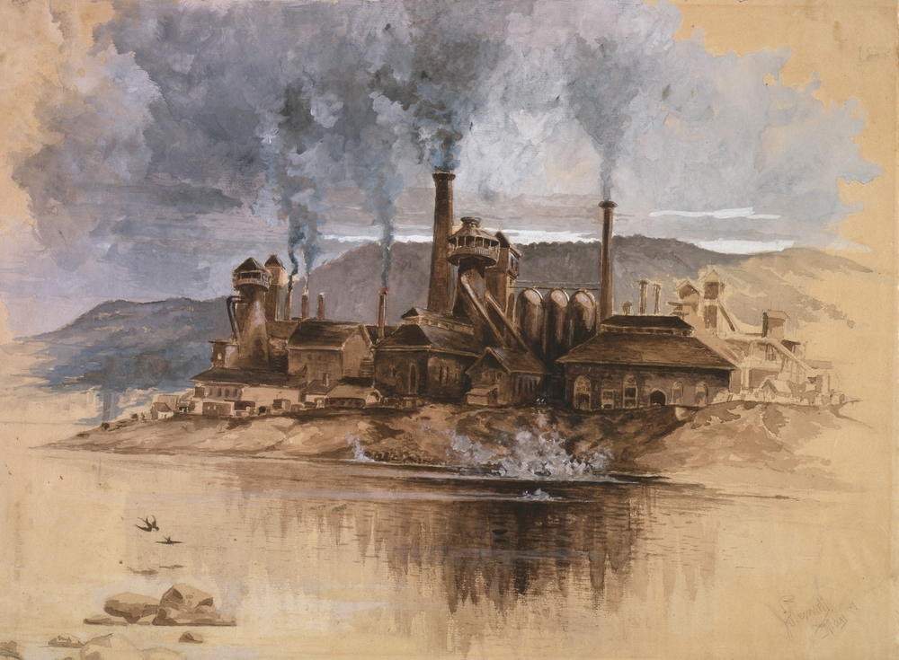

⚙️ การปฏิวัติอุตสาหกรรม

การปฏิวัติอุตสาหกรรมเป็นการเปลี่ยนแปลงครั้งสำคัญของโลก เริ่มต้นในประเทศอังกฤษในช่วงคริสต์ศตวรรษที่ 18 โดยมีการนำเครื่องจักรและเทคโนโลยีใหม่มาใช้ในการผลิต แทนการผลิตแบบใช้แรงงานคนเป็นหลัก
สิ่งประดิษฐ์ที่มีความสำคัญ ได้แก่ เครื่องจักรไอน้ำ เครื่องปั่นด้าย และเครื่องทอผ้า การพัฒนาเครื่องจักรทำให้โรงงานสามารถผลิตสินค้าได้เป็นจำนวนมาก ส่งผลให้เกิดการขยายตัวของอุตสาหกรรมและการค้า
การปฏิวัติอุตสาหกรรมทำให้ผู้คนจำนวนมากย้ายจากชนบทเข้าสู่เมือง เพื่อทำงานในโรงงาน เกิดการขยายตัวของเมืองและชนชั้นแรงงาน แม้จะช่วยเพิ่มการผลิตและความก้าวหน้าทางเศรษฐกิจ แต่ก็เกิดปัญหาด้านแรงงาน เช่น ชั่วโมงทำงานยาวนาน ค่าจ้างต่ำ และสภาพการทำงานที่ไม่ปลอดภัย